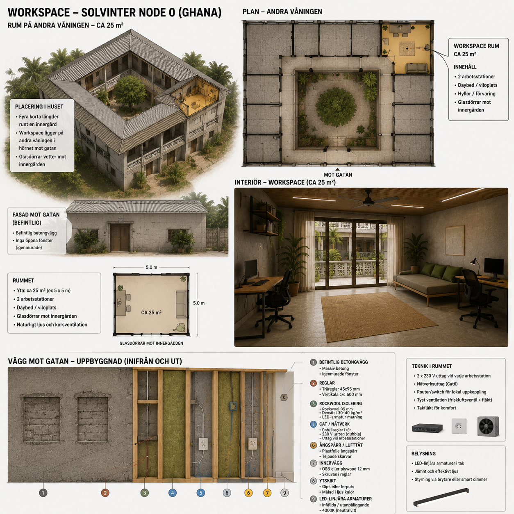

Workspace
The first operational form of Solvinter Edge is not a large campus or a data center. It is a quiet, cooled and carefully designed room where people can do meaningful digital work with computers, connectivity and AI.

Purpose
The workspace is the economic engine of Cow Lane Node 0.1.
It is designed to support remote digital work, AI-assisted production, documentation, research, training and practical learning.
The goal is not only income. The goal is to learn how people can be trained, supported and trusted to perform valuable digital work locally.
Design Requirements
Silence
The room should be acoustically calm. Sound insulation, soft materials and controlled equipment noise should make sustained concentration possible.
Cooling
Air conditioning is essential. A productive workspace in Accra must protect people and equipment from heat stress.
Connectivity
The first version can use a 5G router and WiFi, with wired networking added where stability matters.
Ergonomics
Desks, chairs, screens, lighting and airflow should support long work sessions without turning the room into a harsh office.
Initial Capacity
- Two workstations in the first phase.
- Expansion to four workstations if the model proves stable.
- Computers, monitors, keyboards and mice from existing hardware where possible.
- AI tools used as practical assistance rather than spectacle.
- Documentation of every decision, cost, failure and improvement.
Why This Comes First
The workstation comes before larger infrastructure because people create value immediately.
A solar compute unit, GPU cluster or larger technical installation only becomes valuable when there are capable people who can operate, maintain and use it productively.
The first investment is therefore in people, workspace, documentation and repeatable practice.
Success Criteria
- At least one quiet workstation is operational.
- Two people can work there on a regular schedule.
- Internet, cooling and power remain stable enough for digital work.
- The work begins to cover part of the operating cost.
- The process becomes clear enough to teach and repeat.